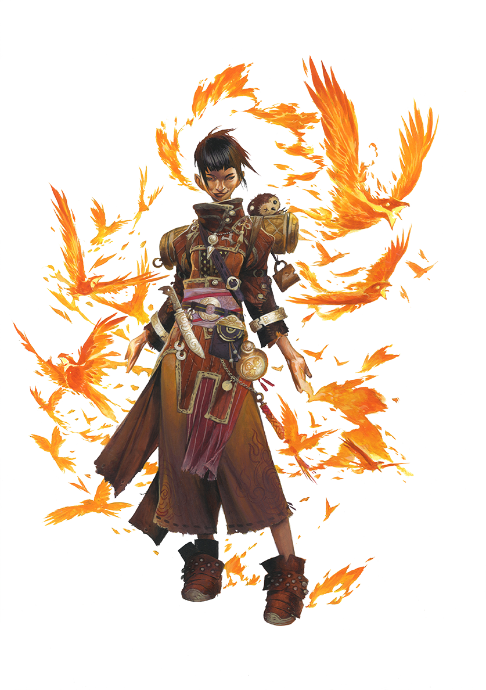

Archives of Nethys



Source Rage of Elements pg. 13
The power of the elements flows from within you. Roaring fire, pure water, fleeting air, steadfast earth, twisting wood, slicing metal. A kinetic gate inextricably tied to your body channels power directly from the elemental planes, causing elements to leap to your hand, whirl around your body, and blast foes at your whim. As your connection to the planes grows, you attain true mastery over your chosen elements.
Key Attribute: CONSTITUTION
At 1st level, your class gives you an attribute boost to Constitution.
Hit Points: 8 plus your Constitution modifier
You increase your maximum number of HP by this number at 1st level and every level thereafter.
Roleplaying the Kineticist
During Combat Encounters...
Elemental magic surges from you throughout the fight. Without any restrictions on how often you can use your abilities, you become a reliable slinger of magic. You can develop powers you can use in a variety of situations... or you can choose just a few favorite attacks you use repeatedly.During Social Encounters...
The elements you channel might guide or even influence how you carry yourself in social situations. You might leap to anger like a raging fire stand your ground as solid as a mountain, keep your motives elusive as the wind, go with the flow like water, make cutting remarks sharp as metal, or exhibit the slow patience of the forest.While Exploring...
Your innate connection to the elements hones your awareness of the natural world. In an environment full of an element you can channel, you're unparalleled, with the ability to repeatedly manipulate the element around you.In Downtime...
You could commune with the elements or practice your control over your kineticist powers. Through retraining, you can realign the flow of your kinetic gate to perfect different manifestations of your element.You Might...
- Have a conflicted relationship with the kinetic gate that fuels your kineticist magic, possibly because it manifested at a traumatic point in your past.
- Struggle with controlling and understanding your elemental powers.
- Form a kinship with elemental creatures or feel at home in areas strong with your element.
Others Probably...
- Find your ability to keep calling on more and more elemental power truly astonishing.
- Defer to you in all matters related to your element, from the smallest tasks to the politics of the elemental planes.
- Worry you'll consume yourself with elemental magic or lose control of its primal forces.
Initial Proficiencies
At 1st level, you gain the listed proficiency ranks in the following statistics. You're untrained in anything not listed unless you gain a better proficiency rank in some other way.Perception
Trained in PerceptionSaving Throws
Expert in FortitudeExpert in Reflex
Trained in Will
Skills
Trained in NatureTrained in a number of additional skills equal to 3 plus your Intelligence modifier
Attacks
Trained in simple weaponsTrained in unarmed attacks
Defenses
Trained in light armorTrained in unarmored defense
Class DC
Trained in kineticist class DCClass Features
You gain these features as a Kineticist. Abilities gained at higher levels list the levels at which you gain them next to the features' names.Ancestry And Background
In addition to what you get from your class at 1st level, you have the benefits of your selected ancestry and background.Attribute Boosts
In addition to what you get from your class at 1st level, you have four free boosts to different attribute modifiers.At 5th level and every 5 levels thereafter, you get four free boosts to different attribute modifiers. If an attribute modifier is already +4 or higher, it takes two boosts to increase it; you get a partial boost, and you must boost that attribute again at a later level to increase it by 1.
Initial Proficiencies
At 1st level, you gain a number of proficiencies that represent your basic training. These are noted at the start of this class.Kinetic Gate
As a kineticist, you've awakened or opened a kinetic gate, a supernatural conduit within your body that can channel elemental forces straight from the elemental planes. You can choose either a single gate (one element) or dual gate (two elements) at 1st level.When selecting an element for your kinetic gate, you can pick from six elements—air, earth, fire, metal, water, and wood. Elements you can channel are referred to as your kinetic elements. Your kinetic elements function even in environments where they normally wouldn't. For example, you could use fire actions underwater even though that's normally not possible, and you could create air in a vacuum.
Your kinetic gate gives you impulse feats, magical actions that let you shape and control your elements in awesome ways. You can select more impulse feats using your kineticist class feats, as described under Impulses. At higher levels, the gate's threshold class feature gives you more impulse feats and lets you choose whether to improve with one element or access new kinetic elements.
Single Gate
Your kinetic gate links to a single elemental plane, starting you with a single element but giving you greater power with it. Choose one element to be your kinetic element, and select two 1st-level impulse feats that have that element's trait.In addition, you gain an impulse junction, a benefit that occurs when you use an impulse of the chosen element that takes 2 actions or more. This happens before the other effects of the impulse, unless noted otherwise. You can gain only one impulse junction per round; they are described in full below.
- Air Before or after the other effects of the impulse, you can either Stride up to half your Speed or Step. If you have a fly Speed, you can Fly up to half your fly Speed instead.
- Earth Fragments of stone float around you, granting you a +1 circumstance bonus to AC until the start of your next turn.
- Fire Increase the damage die size of fire damage dealt by the impulse by one step.
- Metal Choose acid, electricity, or piercing. Until the start of your next turn, each time a creature touches you or damages you with an unarmed melee attack or non-reach melee weapon, it takes damage of the chosen type equal to half your level (minimum 1 damage).
- Water After the impulse's other effects, you can move one creature targeted by the impulse or in its area 5 feet in any direction, or 10 feet if it's in a body of water. This can't move the creature into the air. You can choose only a creature that's willing to be moved, that failed its save against the impulse, or that you succeeded at an impulse attack roll against.
- Wood You gain temporary Hit Points equal to your level that last until the start of your next turn.
Dual Gate
Your kinetic gate is a harmonious conduit between two planes, allowing you to combine their elements to give you a versatile set of abilities. Select two elements to be your kinetic elements. Then, select two 1st-level impulse feats, one with the trait of the first element and one with the trait of the other.Kinetic Aura
Through your kinetic gate, elements flow from an elemental plane to orbit your person. The form and appearance of this kinetic aura are unique to you. Examples include a chaotic wind orbiting the body, fragments of floating gravel, colorful wicks of flame, stars of raw metal always changing shape, floating snowflakes, or splinters dancing in the air. If you can channel more than one element, pieces of all your kinetic elements appear in the aura.You have the Channel Elements action, which lets you activate your kinetic aura.
Channel Elements [one-action]
Aura Kineticist PrimalSource Rage of Elements pg. 15
Requirements Your kinetic gate isn't active.
You tap into your kinetic gate to make elements flow around you. Your kinetic aura activates, and as a part of this action, you can use a 1-action Elemental Blast or a 1-action stance impulse. Your kinetic aura is a 10-foot emanation where pieces of your kinetic element (or all your kinetic elements, if you can channel more than one) flow around you. The kinetic aura can't damage anything or affect the environment around you unless another ability allows it to. Channel Elements has the traits of all your kinetic elements.
Your kinetic aura automatically deactivates if you're knocked out, you use an impulse with the overflow trait, or you Dismiss the aura. Though you can't use new impulses while your kinetic aura is deactivated, ones you already used remain, and you can still Sustain any that can be sustained. Stance impulses are linked to your kinetic aura and end when the aura deactivates.
Impulses
An impulse is a special type of magical action available to kineticists, allowing them to wield or shape their element into diverse and powerful forms. To wield an element, you must have your kinetic aura active and have a free hand, as described in the impulse trait. You automatically gain the Elemental Blast and Base Kinesis impulses, and your kinetic gate selection gives you additional impulse feats. You can select more impulse feats with kineticist class feats, and at higher levels, you'll automatically get more with the gate's threshold class feature. You can select an impulse feat only if it matches one of your kinetic elements.Impulses are magical, and though they aren't spells, some things that affect spells also affect impulses. Abilities that restrict you from casting spells (such as being polymorphed into a battle form) or protect against spells (such as a spell that protects against other spells or a creature's bonus to saves against spells) also apply to impulses.
Impulse Levels
Any impulse you use is the same level you are. For instance, if you're 5th level, your Elemental Blast would be 5th level (and its counteract rank would be 3rd rank), even though you gained the action at 1st level.Similar to spells, many impulses get more powerful as you increase in level. In these cases, the impulse ends with one or more “Level” entries. This either lists the levels at which the impulse gets an upgrade or has an entry with a plus sign that describes a benefit that increases on a regular basis. For instance, a 1st-level impulse with a “Level (+4)” entry would get stronger at 5th, 9th, 13th, and 17th levels.
Impulse Attacks And DCs
An impulse that requires a saving throw uses your kineticist class DC. Some of your impulses require you to attempt an impulse attack roll to see how effective they are. Your impulse attack roll uses the same proficiency and attribute modifier as your kineticist class DC. Like a spell attack modifier, your impulse attack modifier uses the following formula: d20 roll + attribute modifier + proficiency bonus + other bonuses + penalties. This means your impulse attack roll is typically 10 lower than your class DC. The drained condition can reduce your impulse attack rolls and class DCs. You can acquire a gate attenuator to gain a bonus to your impulse attack modifier.Elemental Blast
The Elemental Blast impulse is a simple expression of your power, allowing you to attack with the pure matter of your kinetic element. Though each element has its own strengths and weaknesses, the basic principles to using them are the same. You can customize the appearance of your Elemental Blast and can even choose a different form each time you use the impulse.Elemental Blast [one-action] or [two-actions]
Attack Impulse Kineticist PrimalSource Rage of Elements pg. 16
With a wave of your hand, you collect elemental matter from your aura and swing or hurl it. Choose one of your kinetic elements and a damage type listed for that element, then make a melee or ranged impulse attack against the AC of one creature. Add your Strength modifier to the damage roll for a melee Elemental Blast. If you make a 2-action Elemental Blast, you gain a status bonus to the damage roll equal to your Constitution modifier.
The element determines the damage die, damage type, and range (for a ranged blast). A damage type other than a physical damage type adds its trait to the blast.
- Air 1d6 electricity or slashing, 60 feet
- Earth 1d8 bludgeoning or piercing, 30 feet
- Fire 1d6 fire, 60 feet
- Metal 1d8 piercing or slashing, 30 feet
- Water 1d8 bludgeoning or cold, 30 feet
- Wood 1d8 bludgeoning or vitality, 30 feet
Critical Success The target takes double damage.
Success The target takes full damage.
Level (+4) The damage increases by one die.
Base Kinesis
The Base Kinesis impulse lets you perform simple alterations to an element.Base Kinesis [two-actions]
Impulse Kineticist PrimalSource Rage of Elements pg. 16
It's trivial for you to create some of your element or alter a portion of it that already exists. Choose one of your kinetic elements to affect. This impulse has a range of 30 feet, and the Bulk of the target must be negligible or light. The GM decides what Bulk the element is. You can't affect an element that's magical, secured in place (like a stone mortared in a wall), or attended by a creature unwilling to let you.
Choose one of the following options, though the GM might allow you to make similar small alterations. Base Kinesis can't deal damage or cause conditions unless otherwise noted.
- Generate You bring an ordinary, non-magical piece of the chosen element from its elemental plane. The element can be used for any of its normal uses. For example, air can be breathed by an air-breathing creature, and fire casts light and can ignite flammable substances.
- Move Move an existing piece of the element up to 20 feet in any direction. If you bring it into your space, you can catch it in an open hand. You can Sustain the impulse to keep moving the element.
- Suppress You destroy an existing piece of element, such as snuffing out a flame or evaporating water from a cup. This affects only natural forms of the element, not durable, crafted goods like a stone statue, metal lock, or wooden door.
Level (+4) The range increases by 15 feet, and the maximum Bulk increases by 1 (allowing Bulk 1 at 5th level).
Kineticist Feats
At 1st level and every even-numbered level, you gain a kineticist class feat.Skill FeatsLevel 2
At 2nd level and every 2 levels thereafter, you gain a skill feat. You must be trained or better in the corresponding skill to select a skill feat.Extract ElementLevel 3
Creatures with a strong tie to your element might be troublesome for you to deal with, at least until you've learned to turn their elemental nature to your advantage. You gain the Extract Element action.Extract Element [one-action]
Impulse Kineticist PrimalSource Rage of Elements pg. 17
You extract elemental matter from a creature's body to weaken it and take its power for your own. Target a creature within 30 feet that has a trait matching one of your kinetic elements or is made of one of your kinetic elements. The target takes 2d4 damage (with no damage type) and becomes susceptible to your impulses, depending on its Fortitude save against your class DC.
Critical Success The creature is unaffected.
Success The creature takes half damage, and you add some of its elemental matter to your kinetic aura. Your impulses bypass any immunity the creature has to their elemental trait or traits, and the target takes a –1 circumstance penalty to its saves and AC against your impulses. If the target normally has a resistance that would apply to damage from one of your impulses, ignore that resistance; if it normally would be immune to that damage type, it instead has resistance equal to its level to damage from the impulse. You can't target a creature with Extract Element if elemental matter you extracted from it is already in your kinetic aura. These effects last for 5 minutes or until your kinetic aura ends, whichever comes first.
Failure As success, but the creature takes full damage.
Critical Failure As failure, but the creature takes double damage.
Level (+2) The damage increases by 1d4.
General FeatsLevel 3
At 3rd level and every 4 levels thereafter, you gain a general feat.Skill IncreasesLevel 3
At 3rd level and every 2 levels thereafter, you gain a skill increase. You can use this increase to either become trained in one skill you're untrained in or become an expert in one skill in which you're already trained.At 7th level, you can use skill increases to become a master in a skill in which you're already an expert, and at 15th level, you can use them to become legendary in a skill in which you're already a master.
Will ExpertiseLevel 3
Your mental defenses grow stronger. Your proficiency rank for Will saves increases to expert.Ancestry FeatsLevel 5
In addition to the ancestry feat you started with, you gain an ancestry feat at 5th level and every 4 levels thereafter.Gate's ThresholdLevel 5
You reach a new milestone in your odyssey to become in tune with your kinetic gate and must decide how to expand the gate's power. At 5th level and every 4 levels thereafter, you choose to either expand the portal or fork the path.- Expand the Portal: Your gate attunes more precisely to one of your elements. Gain an impulse feat of your level or lower for one of your kinetic elements; if you have more than one element, you can choose a composite impulse. You also gain a gate junction for one of your kinetic elements. If you have no valid options for the feat—typically because you have one kinetic element and devoted your class feats to gaining that element's impulses—you can instead select any kineticist class feat of your level or lower for which you meet the prerequisites.
- Fork the Path: Your gate reaches to another elemental plane. Add a new element of your choice to your kinetic elements. Gain an impulse feat of your level or lower with the trait of that element. You can't select a composite impulse feat with this feat selection.
Gate Junctions
When you gain a gate junction, you develop a specialized kinetic technique. Choose one benefit from the gate junction table for one of your kinetic elements.- A critical blast junction happens when you get a critical success with an Elemental Blast of the kinetic element.
- An elemental resistance grants you resistance to damage while your kinetic aura is active. This resistance is equal to your level, and it applies to damage of any listed type or that comes from a creature or effect that has any of the listed traits. At 17th level, you gain immunity to effects with any of the listed traits. This doesn't make you immune to creatures with such a trait. You can voluntarily forgo this resistance, immunity, or both if you want an effect to work on you.
- You can choose an impulse junction instead of one of the listed junctions. Impulse junctions are listed under Single Gate class feature above.
- An aura junction adds an effect to your kinetic aura when you Channel Elements.
- A skill junction makes you trained in the listed skill and grants you the listed skill feat. If you were already trained in the listed skill, you instead become trained in a skill of your choice. While your kinetic aura is active, you gain a +1 status bonus to the listed skill; the bonus increases to +2 at 10th level and +3 at 17th level.
See here for all gate junctions by element
Kinetic DurabilityLevel 7
The sustenance of your inner gate counters harm that would come to your body. Your proficiency rank for Fortitude saves increases to master. When you roll a success on a Fortitude save, you get a critical success instead.Kinetic ExpertiseLevel 7
Your kinetic gate grows stronger, making your elements harder to resist. The power flowing from you is even harder to resist. Your proficiency rank for your kineticist class DC increases to expert.Perception ExpertiseLevel 9
You remain alert to threats around you. Your proficiency rank for Perception increases to expert.Kinetic QuicknessLevel 11
Your body flows with the elegance of a flame, a wave, a breeze. Your proficiency rank for Reflex saves increases to master. When you roll a success on a Reflex save, you get a critical success instead.Reflow ElementsLevel 11
You twist one of the impulses you've learned into a different but still similar magic. When you make your daily preparations, you can replace one of your impulse feats with a different impulse feat that has the same elemental trait. You can reflow only impulse feats that have exactly one elemental trait, not composite impulse feats or feats that vary by element. This follows the same rules as retraining; you can replace impulse feats gained through your class feats or through class features that grant you impulse feats.Weapon ExpertiseLevel 11
You've improved your combat skill. Your proficiency rank for simple weapons and unarmed attacks increase to expert.Light Armor ExpertiseLevel 13
You've learned how to dodge while wearing light or no armor. Your proficiency ranks for light armor and unarmored defense increase to expert.Weapon SpecializationLevel 13
You've learned how to inflict greater injuries with the weapons you know best. You deal 2 additional damage with weapons and unarmed attacks in which you're an expert. This damage increases to 3 if you're a master, and 4 if you're legendary.Greater Kinetic DurabilityLevel 15
Your gate protects you even more. Your proficiency rank for Fortitude saves increases to legendary. When you roll a critical failure on a Fortitude save, you get a failure instead. When you fail a Fortitude save against an effect that deals damage, you halve the damage you take.Kinetic MasteryLevel 15
The power flowing from you grows even difficult to resist. Your proficiency rank for your kineticist class DC increases to master.Double ReflowLevel 17
Your kinetic gate becomes even more adaptable. When you use reflow elements, you can replace two impulse feats instead of one.Final GateLevel 19
Your kinetic gate reaches a perfect form, its power constantly fighting to be released. If your kinetic aura is inactive, you automatically use the first action of your turn to Channel Elements as a free action. You can deliberately suppress the effect. If you're unable to act, final gate still functions, but you don't get to use the Elemental Blast or stance impulse you normally do from using Channel Elements.Kinetic LegendLevel 19
Your elements become almost impossible to resist. Your proficiency rank for your kineticist class DC increases to legendary.Light Armor MasteryLevel 19
Your skill with light armor improves, increasing your ability to dodge blows. Your proficiency ranks for light armor and unarmored defense increase to master.Shelyn's Corner
×Classic Feel
Classic Feel
Classic Feel
The classic look for the Archives of Nethys.
| Table |
| Data |
| More Data |
Book Feel
Book Feel
Book Feel
An alternative feel, based on the Rulebooks.
| Table |
| Data |
| More Data |
Round Feel
Round Feel
Round Feel
A rounded, modern look for the archives.
| Table |
| Data |
| More Data |
Slim Feel
Slim Feel
Slim Feel
A variant of the Round feel, more compact.
| Table |
| Data |
| More Data |